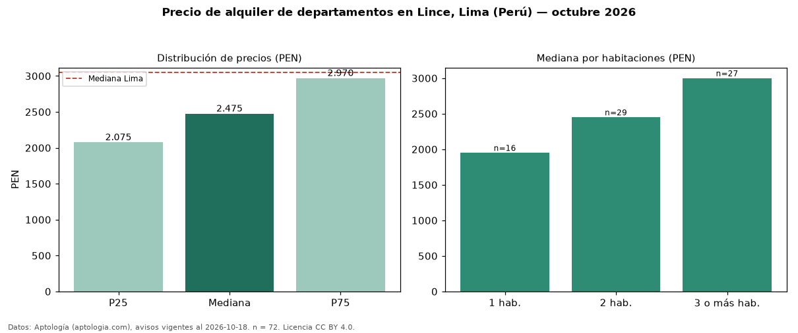

Precio de alquiler de departamentos en Lince, Lima (Perú) — octubre 2026
PEN 2.475 al mes es el canon mediano de departamentos en alquiler en Lince, Lima (Perú) (n = 72 avisos). Frente a la mediana de Lima para departamentos (PEN 3.050), queda 19 % por debajo. Por metro cuadrado, la mediana es PEN 35,94/m² al mes (n = 71 avisos con área), 9 % por encima de Lima (PEN 32,91/m²). Con el precio por m² de venta del mismo segmento (PEN 7.661/m²), la rentabilidad bruta implícita es 5,6 % anual (aproximación con medianas de ofertas distintas). El área mediana anunciada es 72 m². El segmento con más oferta es el de 2 habitaciones (29 avisos, mediana PEN 2.450); pasar de 1 habitación a 3 o más habitaciones cambia la mediana +54 %. La cuota de mantenimiento o condominio mediana declarada es PEN 245 al mes (n = 27), aparte del canon. Por precio mediano es el puesto 9 de 16 distritos de Lima con al menos 30 avisos de departamentos en alquiler (PEN): en la franja media. Datos: Aptología (aptologia.com), CC BY 4.0 — https://www.aptologia.com/pe/alquiler/lima/lince. Archivos: PDF, CSV con las cifras y gráfica PNG.

| Avisos únicos | 72 |
|---|---|
| Percentil 25 | COP 2.075 |
| Mediana | COP 2.475 |
| Percentil 75 | COP 2.969 |
| Mediana por m² | COP 35 |
Fuente: avisos vigentes de portales inmobiliarios recopilados por Aptología, deduplicados (mínimo 30 avisos únicos por celda). Precios pedidos, no cerrados. Fecha: 2026-10-18.